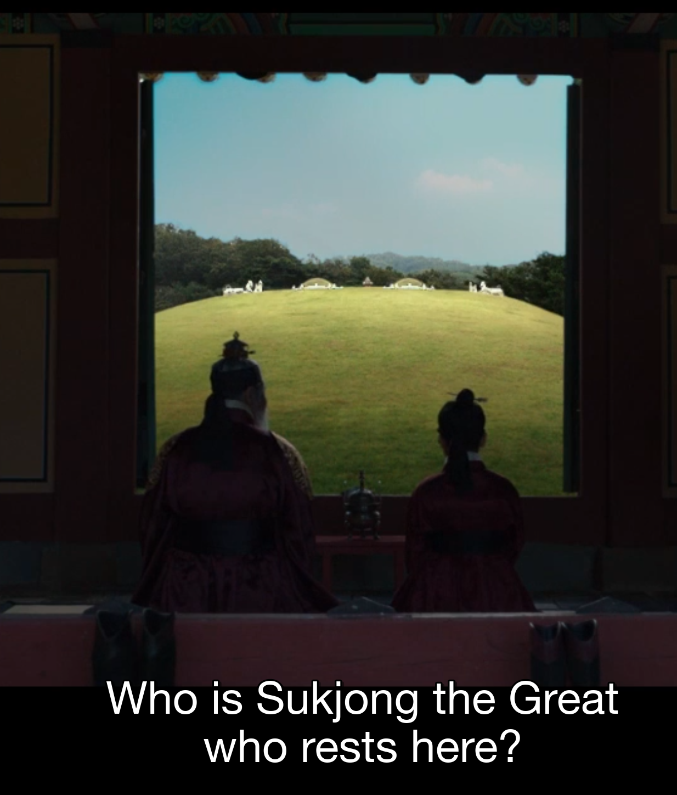
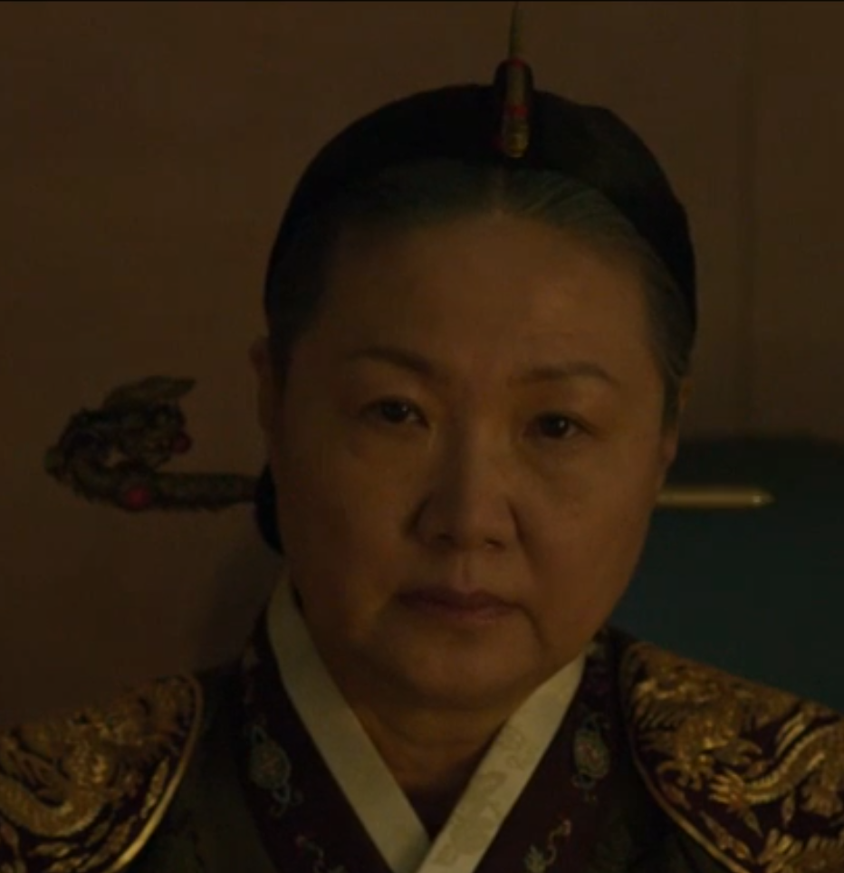
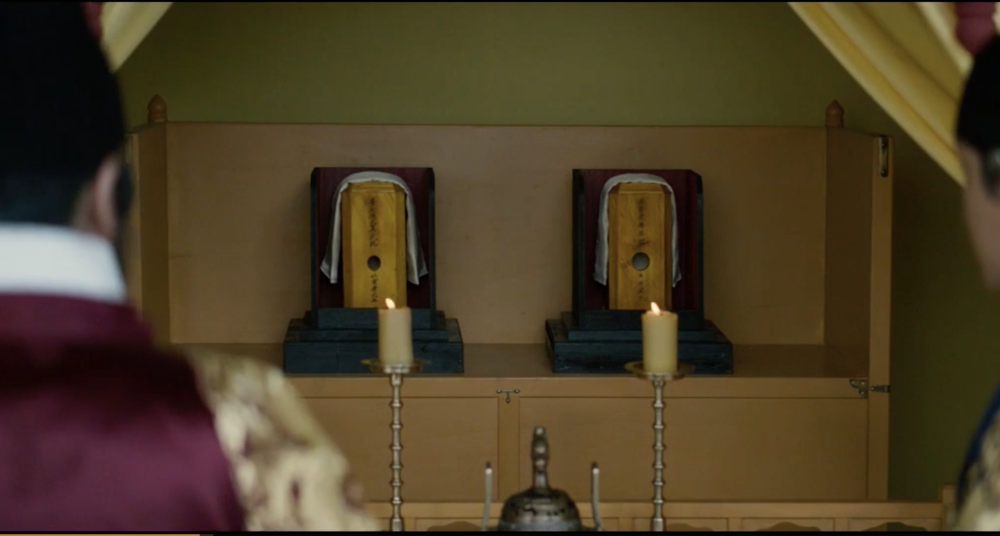
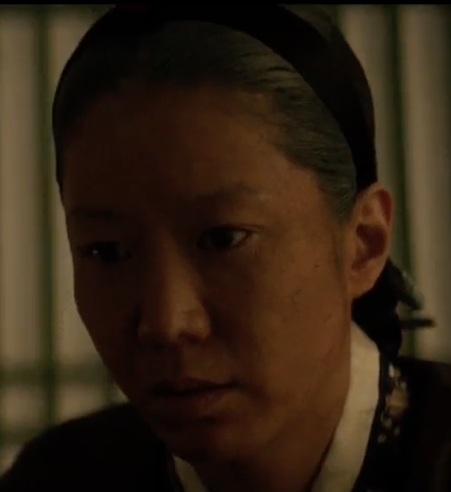
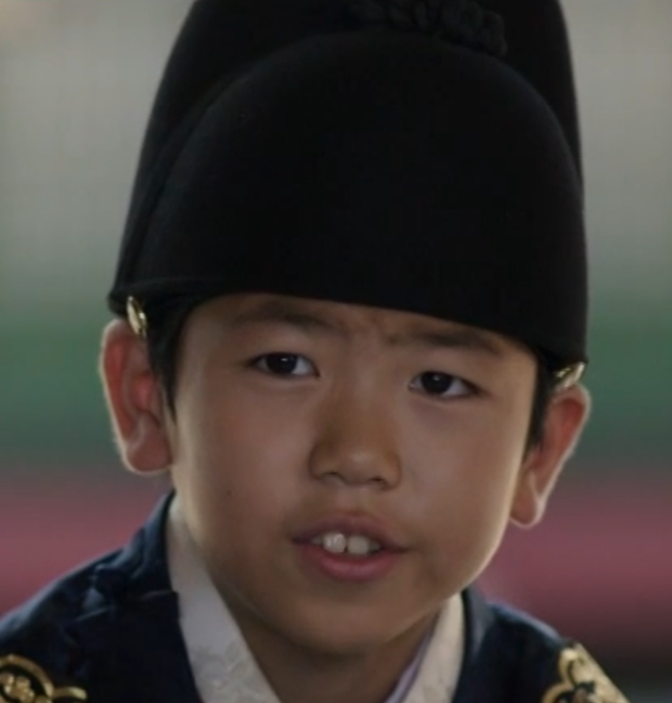
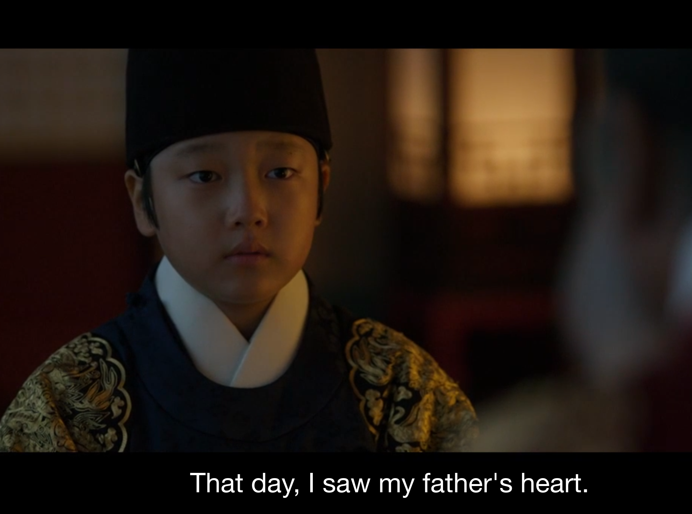

House of Yi
Older generation at the top, descendants below. Sado, Hyegyeong, and Jeongjo are shown with paired old and young portraits.
Generation I

King
Sukjong
1661-1720
Father's generation above Yeongjo

Queen Dowager
Queen Inwon
1687-1757
Same generation as Sukjong
Generation II

King
Gyeongjong
1688-1724
Yeongjo's brother
King
Yeongjo
1694-1776
Father of Sado

Royal Consort
Seonhui
1696-1764
Mother of Sado
Generation III

Crown Prince
Sado
1735-1762
Son of Yeongjo and Seonhui
Crown Princess
Hyegyeong
1735-1816
Wife of Sado
Generation IV

King
Jeongjo
1752-1800
Son of Sado and Hyegyeong